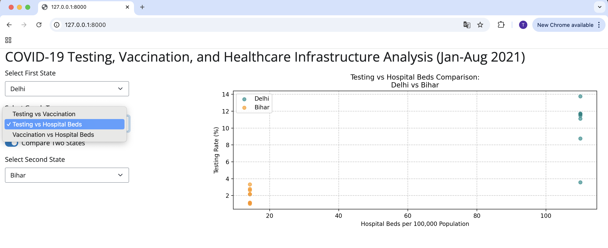

Shreya Shravini (Section 3; @shreyashravini), Tarini Dewan (Section 1; @tarinidewan)
December 7, 2024
The COVID-19 pandemic tested healthcare systems worldwide, with countries racing to both test and vaccinate their populations. Our analysis examines how testing capacity affected vaccination rates across Indian states from January to August 2021, while considering factors like healthcare systems and socioeconomic differences.
The motivation to study this question comes from the need to make better choices about where to put resources during public health emergencies. If states with good testing programs gave out vaccines faster, infrastructure is likely the key barrier in underperforming states - since successful programs indicate they already have trained staff, data systems, and coordinated healthcare networks in place.
On the other hand, if states with strong testing still struggled with vaccination, public awareness is likely the barrier. Given that vaccine confidence in India is generally high, the challenge lies in reaching underserved communities and ensuring access to health information, particularly in areas with lower literacy rates.
The answer also matters because testing centers can help build a culture of preventive healthcare. When people have good experiences with healthcare facilities, they’re more likely to engage with the system proactively rather than only seeking care when sick, which could shape future public health programs.
Our analysis draws from multiple data sources across India. For vaccination and testing data, we use daily state-level records from covid19india.org covering 2021. This includes daily vaccination numbers (both first and second doses) and testing samples for each state. We complement this with state population projections from UIDAI (2020), hospital counts from the Ministry of Health (2018) as a measure of healthcare infrastructure, and state-wise Human Development Index data from UNDP Global Lab (2022).
Our data preparation involved several steps. First, we noticed that the vaccination and testing numbers in our raw data were cumulative daily totals - each day’s number was monotonically increasing. To get actual daily numbers, we created a lag variable that captured the previous day’s total for each state, then subtracted this lagged value to find the marginal increase in tests or vaccines. We identified instances where the calculated daily rates were negative - a data quality concern since daily testing and vaccination numbers should either increase or remain constant. We removed these observations from our analysis. In the testing data, we found inconsistencies where the components (positive and negative tests) were sometimes missing or, when available, didn’t sum to the reported total tests. However, since our analysis uses only the total test numbers, these inconsistencies don’t affect our findings.
Since India’s vaccination program started in 2021, we limited our testing data to match this timeframe. This gave us eight months of data (January to August 2021) to analyze. After aggregating daily data to monthly totals and combining our datasets, we covered 35 out of India’s 36 states and union territories, missing only Dadra and Nagar Haveli and Daman and Diu - a gap that shouldn’t significantly impact our findings given its small population.
While merging our combined vaccination-testing dataset with population, hospital, and HDI data, we lost data for Ladakh due to missing hospital and HDI data, bringing our final analysis to 34 states and territories. We calculated per-capita testing and vaccination rates using population data. While testing and vaccination rates vary by month, variables like population, hospitals per capita, and HDI were only available at a single point in time. This is acceptable since these are structural characteristics that don’t change significantly over our eight-month study period.
For our exploratory analysis, we categorized states by HDI scores (using UNDP’s “high” and “medium” classifications, plus a “low” category for states below the country’s average) and by hospitals per capita (divided into three equal quantiles using pandas’ qcut). While this basic binning approach has limitations, it provides a useful starting point for pattern analysis.
We examine the distribution of testing and vaccination rates across states using boxplots, as they capture variation across both space (states) and time (months) - each box represents how a state’s testing or vaccination rate varied across our eight-month study period.
The testing rates boxplot shows most states tested between 2-10% of their population monthly, with some notable outliers. Lakshadweep, for instance, tested over 40% of its population in some months, likely due to its small, isolated island population.
The vaccination rates boxplot reveals most states vaccinated between 2-15% of their population monthly. Urban areas and states with stronger healthcare infrastructure (Delhi, Kerala, and Telangana) consistently achieved higher rates of 15-20%, while resource-constrained states like Bihar and Jharkhand managed only 2-3%. States that performed well in testing generally also achieved higher vaccination rates, suggesting underlying healthcare capacity influenced both outcomes.
Looking at aggregate trends, we found testing and vaccination rates across states generally moved in parallel, despite operating at different scales. This pattern was briefly interrupted around May 2021 due to a vaccine supply shortage, but resumed once supplies were restored.

We examined the relationship between testing and vaccination rates through two scatter plots that group states by healthcare infrastructure and development levels. Each point shows a state’s monthly performance, with states colored by hospitals per capita in one plot and HDI categories in the other. In both plots, higher-performing states (blue dots) cluster toward the upper-right, indicating success in both testing and vaccination. This consistent pattern suggests that both physical healthcare infrastructure and broader socioeconomic development played important roles in determining states’ COVID-19 response capacity.
We ran a regression model to examine how testing rates, HDI, and healthcare infrastructure affect vaccination rates, including interaction terms to understand how testing’s impact varies with development levels. Our results show that higher testing rates and HDI scores are positively associated with vaccination rates. However, we found an unexpected negative relationship between number of hospitals and vaccination rates, suggesting that successful vaccination efforts might depend more on targeted campaigns than existing hospital infrastructure. Testing had a stronger effect on vaccination rates in states with lower HDI, indicating that expanding testing infrastructure could particularly benefit vaccination coverage in less developed states.

We developed an interactive Shiny dashboard to explore relationships between testing, vaccination, and healthcare infrastructure across Indian states. Users can compare any two states and choose between visualizations of testing, vaccination, and hospital bed relationships. A comparison of Delhi and Bihar shows how infrastructure gaps affected COVID-19 response. Delhi’s healthcare capacity is five times that of Bihar, corresponding to stark differences in performance - Delhi achieved testing rates of 8-14% while Bihar managed only 1-4%. This suggests existing healthcare infrastructure influenced states’ pandemic response capabilities.

While our analysis shows correlations rather than causal relationships, the findings have important policy implications. The strong link between testing and vaccination, especially in lower HDI states, indicates that investing in testing infrastructure could strengthen vaccine delivery systems. However, simply building more hospitals may not be the most effective strategy. Policymakers should consider targeted approaches like mobile vaccination units, community health centers, and local drives, particularly in areas with limited healthcare access. The influence of socioeconomic development on vaccination rates also shows that states should work on improving overall development indicators while building healthcare capacity.
Future research could examine how specific components of testing programs influence vaccination success, which types of targeted campaigns work best in different settings, and how states with limited infrastructure but successful vaccination programs achieved their results.